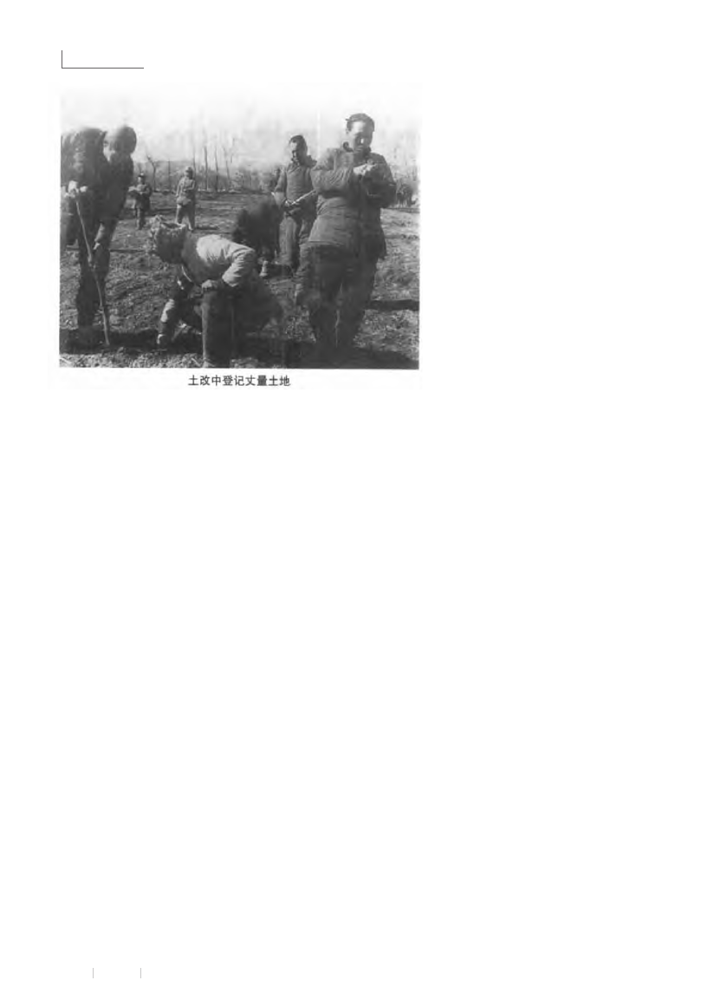

娄烦县位于山西省中西部，原属静乐县，1971年建娄烦县。抗日战争时期，这里是晋绥边区抗日根据地，中共静乐县委和静乐县抗日民主政府、中共晋绥三地委和三专署，以及八路军三五八旅等多支抗日武装曾长期驻扎这里，与娄烦人民一道进行了艰苦卓绝的八年抗战。1939年冬“晋西事变”，抗日军民在娄烦地区摧毁了阎锡山县政权，建立了静乐县抗日民主政府，抗战胜利后这里就全部成为解放区，具有很好的群众基础，因此1947年土改时，这里和晋绥边区首府兴县成为中央土改工作试点县。
1947年2月，中央土改试点工作团兵分两路，一路由陈伯达带领来到静乐县娄烦地区的潘家庄行政村（另一路由康生带领来到兴县郝家坡），先作试点，然后全面铺开进行土地改革。陈伯达工作组于1947年9月撤走，由徐志远带工作组继续，到1947年底土改结束。按理说，老解放区人民为争取抗战胜利付出了巨大牺牲，作为土改试点，本应通过土改，实现耕者有其田，营造一个稳定和谐的社会氛围，尽快恢复生产，休养生息，医治战争创伤。不料在土改过程中却自始至终推行了一条极“左”路线，给社会造成了极大破坏，加之其后继政策的不当，不仅给土改试点区，也给整个社会留下了永远的痛。
斗争惨烈绝人寰
当时提的口号是“村村点火，处处冒烟”，“群众要怎么办就怎么办”。在极“左”路线的指引下，各种整人手段无所不用其极。开斗争会时，用来烫人的炭火、火柱、熨斗、铁锹等是必备之物，此外还有老虎凳、棍棒、竹签、擀面杖、醋柳圪针、麻绳、刀具、细铁丝串着的艾绳、甚至是蝎子。连贫农团的孩子们也准备了小镢把，大人们去斗地主时，孩子们就斗地主儿子。很多人被当场斗死，也有人自杀身亡。7月中旬，史家村召开行政村斗争大会，当场有7人被斗死。
有的村庄，对年轻漂亮的地主女人，作为胜利果实分配，有的女人不堪凌辱自尽。土改一年，全县（指静乐县，主要是娄烦地区） 当场被斗死亡和以后自杀的有680多人，因打伤致残和惊吓后来死亡的无法统计。
斗争地主扩大化
土改工作团提出了划分成分的三条标准：一是不仅要看他现在的土地财产，而且要查他历史上，起码是三代以内的土地、财产及其有无剥削；二看他的政治表现，也就是群众对他的态度；三看他铺的摊子大小。人们把这三条标准概括为“盘三代，看现在”。按照第一条标准，要查三代，即使本人不是地主、富农，但他的父亲、祖父、曾祖父是地主、富农，就得定为地主、富农。按第二条标准，一些人即使没有多少土地财产，但只要贫雇农中有人指出某人有劣迹，就可定为恶霸。第三条，看住房、穿戴、摆设。即使没有剥削，但摊子摆得大，生活稍微好一些，也得定为地主、富农或恶霸。在这三条标准指导下，扩大化倾向表现在四个方面，一是地主、富农比例高。娄烦地区当时有10954户，地主、富农就有2028户，占总数的18.5%。地主、富农占30%以上的村达36个。有许多村庄，公社化时期因地主、富农过多选不出村干部来，参军指标也没法完成。
其中有一点必须指出，抗日战争是全民抗战。如果说贫下中农主要是出人出力的话，那么抗战所需的大量粮食和钱财，主要是地主、富农供给的。境内许多地主为了抗战胜利，主动捐粮捐钱，涌现出许多开明地主。但就是这
些开明地主，土改时也无一例外地遭到了残酷斗争。其中最著名的有马家庄刘肇津，为1937年娄烦建党时的党员、常年义务为三五八旅官兵治病，时>任三五八旅团长的杨秀山将军曾患伤寒，刘延至家中为其治病40多天。后在兴县晋绥公安分局办的丰记商店任坐堂先生，土改时被本村群众打死。二是扫地出门断生计。口头上说是要给地主、富农留有生活出路，实际操作过程中，除一部分人当场被斗死外，相当一部分人被扫地出门，没给留下任何生活生产资料，沦为乞丐。三是谁是恶霸无标准。如果说地主、富农或多或少还有些经济方面的政策参考，那么谁是恶霸就全是群众的随意行为。今天一个土改积极分 子，只要 有 人在会场上呼一声“×××是恶霸”，被点到名的人就很有可能被揪斗甚至被斗死。致使社会矛盾激化，人人自危。直到1947年农历十一月下旬，下龙泉村一夜之间以恶霸为名打死弟兄五人，此事震动晋绥边区，土改打死人现象才停止，这时娄烦土改已临近结束了。
四是中农利益被侵犯。对待中农，虽然没有像斗地主那样惨烈，但强行平分中农的土地和财产。群众称之为“砍倒大树砍小树，砍倒小树拔圪针”。“平分”方法是：好地贫雇农，中地中农，赖地分给所谓占过便宜的干部。
革命队伍难幸免
娄烦作为抗日根据地，1937年冬就建立了共产党组织。抗战八年来为国家和地方培养了大批干部，他们为争取抗战胜利出生入死，经受了长期考验，绝大部分是好的和比较好的。但土改开始后，提出踢开支部搞土改，所有村干部一律隔离关押进行清算，清算方式与斗争地主毫无二致。即使在外工作的干部，一旦碰到风口浪尖上也难逃一劫。其中有两件事惊动了晋绥边区乃至中央。
第一件，枪毙抗日英雄郝园脸。郝园脸是潘 家庄行政村城东沟村人，贫农，1938年参加村自卫队，1939年入党，1941年任行政村民兵中队长，1944年出席晋绥边区群英会，被授予劳武结合特等民兵英雄称号，1947年4月在陈伯达主持下被枪决，开娄烦土改杀人先例。
第二件，党的记者郭克卿被打死。郭克卿为郭家庄村人，中共中央驻延安时任《解放日报》兼新华社记者。1947年冬赴晋察冀边区采访时，路过离郭家庄不远的方山县马坊镇，把警卫留在马坊镇只身回家探亲，顺便劝说家人交出土地财产接受土改，刚进村还未及回家就被群众抓住，用乱棒乱石打死。
据统计，娄烦地区土改死亡人员中，有三分之一是各级干部，其中以区村地方干部居多。
学校停课
娄烦教育从1904年开始兴办公立小学后，呈现出私塾和公学并存的局面。1937年7月抗战爆发，娄烦全县出现过短暂的停课。但娄烦地区的党组织在1938年5月就着手组织学校复课了。1940年静乐县抗日民主政府成立后又组建了抗日游击两级小学，至1942年日军占领娄烦后，娄烦地区的学校教育一直没有停止过。
但从1947年2月娄烦土改开始后，凡开展土改的地方，由于土改只重斗人，不重教育，学校全部停课，本来已是在非常困难的条件下办学的校址，大都成了斗人的场所。办学和教书的人大都是地主、富农和基层干部，全部成为被斗的对象。直到1948年秋，社会才从土改的阵痛中恢复过来，学校逐步恢复。停课时间长达一年半。而对教师队伍的摧残所造成的损失，更是在很长时间内难以弥补。
政策失误多后患
1947年底，晋绥土改极“左”倾向严重，死人过多现象引起中央重视，从1948年2月开始纠偏。对划错的成分予以改定，对扫地出门的地主给予和贫雇农一样的土地，对多分中农的土地财产予以退还，对错误处理的干部予以纠正。但这次纠偏是很不彻底的。首先是从1948年初土改工作团就陆续撤走，到5月底已全部走人，纠偏工作匆匆结束，更重要的是土改档案没有按纠偏结果处理。在以后包括“文化大革命”在内的历次运动中，由于极左路线愈演愈烈，原来改定了的成分如地改中、富改中，一律还是按地主、富农对待，纠偏等于没有纠。
其次是制造这场灾难的康生、陈伯达回到中央后，不仅没有得到任何处理，反而平步青云，进一步被提拔，被重用。“文化大革命”的整人手法和手段，与康、陈晋绥土改如出一辙。
还有一点需要指出，把农民划分为地主、富农、中农、贫农几个成分，这在当时无可非议，进行这样一场大规模运动，必须有一定的执行标准方可操作。但在土改结束后，地主、富农不仅在政治上、经济上被打垮了，甚至在肉体上也被消灭了，地主、富农的孩子们或者当时刚出生，或者是土改后才出生的，更不知道剥削为何物。但在从土改结束到十一届三中全会30年的时间内，却像印度的种姓制度和元朝的等级制度一样把人分成地主、富农、中农、贫农几个等级（后来更发展为地富反坏右叛徒特务死不改悔的走资派和臭老九），地主、富农的子女不准参军，不准升学，不准参加工作，不准提干，在世界上一个人口最多的国家造成了世界上最大的不平等。这个政策执行30年，对中国发展造成的最大危害，是使农村相当一部分人才被摧残了、扼杀了。
说明：本文根据娄烦县和静乐县政协文史资料中的有关内容，结合我后来的调查整理而成。其中土改被斗死人数，两地文史资料中有出入。静乐文史资料中称土改死亡人数为447人，其中党员、干部26人。娄烦文史资料中由当时参加并领导过土改的老干部苏军回忆，是死亡680多人，其中三分之一是干部。■
（责任编辑杨继绳）
 返回主目录